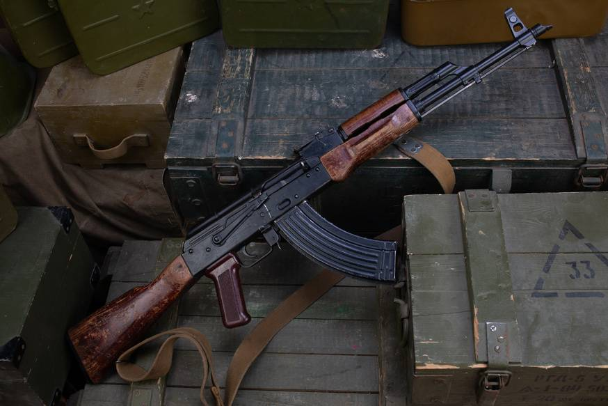
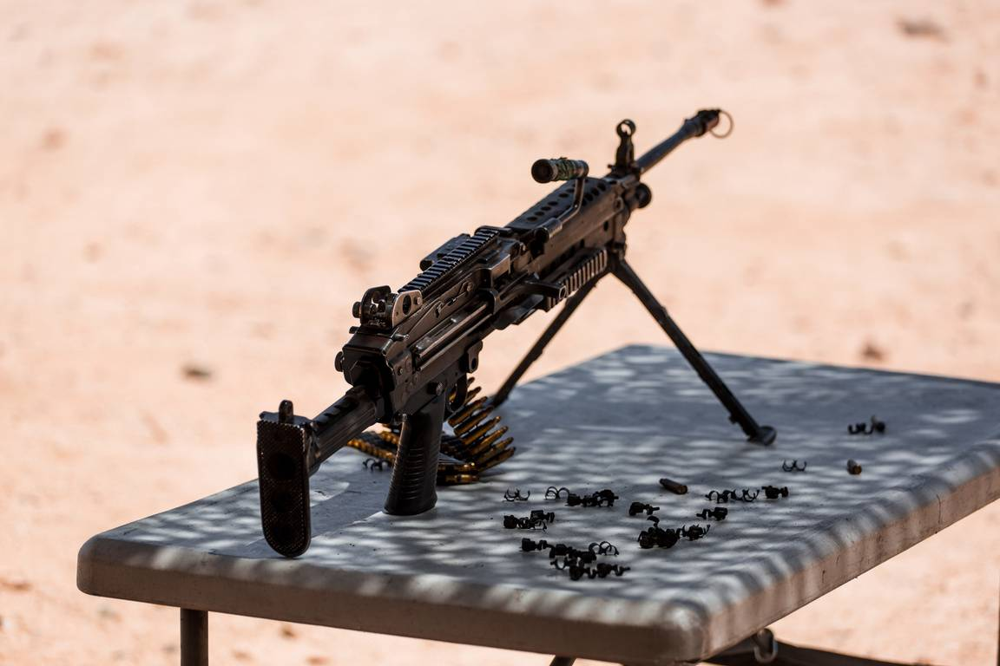
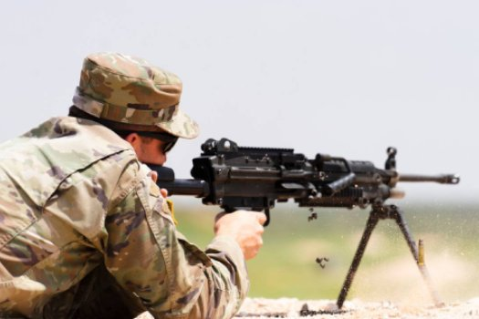
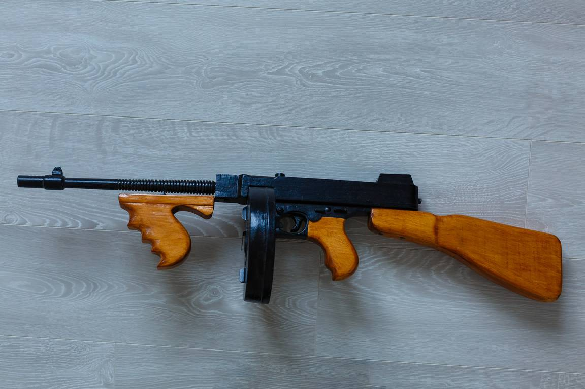
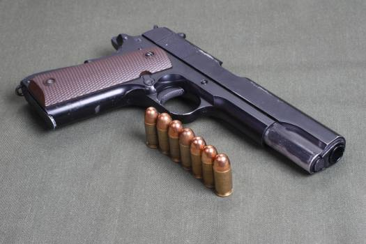

| Specification | AK-47 (7.62×39mm) | Barrett M82 / M107 (.50 BMG / 12.7×99mm) |
|---|---|---|
| Type | Assault rifle | Heavy sniper / Anti-materiel rifle (semi-automatic) |
| Caliber | 7.62×39mm | .50 BMG (12.7×99mm) |
| Operation | Gas-operated, rotating bolt | Recoil-operated, semi-automatic (short-recoil) |
| Feed System | Detachable box magazine | Detachable box magazine |
| Magazine Capacity | 30 rounds (also 10, 20, 40, drum variants) | 10 rounds (by config) |
| Rate of Fire (cyclic) | ≈600 rounds/min | Semi-automatic |
| Effective Range | 300–400 m | 1200–1800 m |
| Maximum Range | 800–1000 m | up to 6,800 m |
| Muzzle Velocity (approx) | ≈710–735 m/s (varies by ammo) | ≈800–930 m/s |
| Overall Length (mm) | ≈870–880 mm | ≈1,440 mm |
| Barrel Length (mm) | ≈415 mm | ≈737 mm (for M82) |
| Weight (unloaded, kg) | ≈3.1–4.3 kg (variant dependent) | ≈12.9–13.5 kg |
| Primary Use | Infantry combat, close-to-medium range | Long-range sniping |
| Notable Variants | AKM, AK-74 (different caliber), AKS (folding stock), AK-103 | Barrett M82A1, M82A2, M107, bolt-action .50 rifles |


| Specification | M249 Light Machine Gun | MP5 Sub Machine Gun |
|---|---|---|
| Type | Light machine gun / Squad automatic weapon | Submachine gun / compact carbine |
| Caliber | 5.56×45mm NATO | 9×19mm Parabellum |
| Operation | Gas-operated, open-bolt (M249) | Roller-delayed blowback (MP5) |
| Feed System | Belt-fed (M27 disintegrating link) OR 30-round STANAG magazine | Detachable box magazine |
| Magazine Capacity | Belt: 100–200 rounds; Magazine: 30 rounds (M249) | 15, 30 rounds (MP5 variants) |
| Rate of Fire (cyclic) | ≈750–1,000 rounds/min | ≈700–900 rounds/min |
| Effective Range | 600–800 m (support role) | 100–200 m |
| Maximum Range | ≈3,600 m (area fire) | ≈200–250 m |
| Muzzle Velocity (approx) | ≈850–915 m/s (5.56 NATO) | ≈400–430 m/s |
| Overall Length (mm) | ≈1,040 mm (with stock) | ≈680 mm (full MP5), 325 mm (MP5K) |
| Barrel Length (mm) | ≈465 mm | ≈225 mm (MP5), 115 mm (MP5K) |
| Weight (unloaded, kg) | ≈7.0–7.5 kg | ≈2.5–3.0 kg |
| Primary Use | Squad support, suppressive fire | Close-quarters combat, special forces, vehicle/aircrew defense |
| Notable Variants | M249 Para, FN Minimi, M249 PIP | MP5A3, MP5SD (integrally suppressed), MP5K, MP5/10 |

| Specification | M1911/HK45 Pistols | Training Pistols |
|---|---|---|
| Type | Service pistol / specialized duty pistol | Training / sporting pistols (32/22) |
| Caliber | .45 ACP | .32 ACP / .22 LR |
| Operation | Short-recoil, tilting barrel | Blowback-operated (most 22/32) |
| Feed System | Detachable box magazine | Detachable box magazine |
| Magazine Capacity | 7–10 rounds (single-stack), 10–14 rounds (modern double-stack) | 7–10 rounds (.32), 10–15 rounds (.22) |
| Rate of Fire (cyclic) | Semi-automatic | Semi-automatic |
| Effective Range | 50–75 m (accurate pistol range) | 25–50 m |
| Maximum Range | ≈1,000 m (ballistic reach) | ≈150–200 m |
| Muzzle Velocity (approx.) | ≈250–280 m/s | .32 ACP: ~280 m/s; .22 LR: ~330–370 m/s |
| Overall Length (mm) | ≈210–220 mm | ≈150–220 mm |
| Barrel Length (mm) | ≈110–127 mm | ≈90–150 mm |
| Weight (unloaded, kg) | ≈0.9–1.2 kg | ≈0.5–1.0 kg |
| Primary Use | Law-enforcement/military duty sidearm | Training, sport shooting, beginner firearms |
| Notable Variants | M1911A1, HK45, Glock 21, Sig P220 | Ruger Mark IV, Walther PP (.32), Browning Buckmark |